Using Couchbase Server to Build a User Profile Store
Overview
This tutorial contains seven main sections:
-
What is a User Profile Store? If you’re new to user profile stores, this section discusses the how and why.
-
Installing Couchbase Start here if you’ve never setup Couchbase before.
-
How to Create a Simple User Profile Store Once you have a Couchbase Cluster set up, this tutorial will show how get started.
-
Querying the Database. In contrast to many other NoSQL database options, Couchbase has unique capabilities for querying and exploring your data.
-
Searching Users with Full-Text Search You don’t need to push all your data to a third party tool just to implement an advanced search in your system. With CB FTS you can implement complex string matchings on natural-language texts directly from database.
-
Storing User Events Storing events is essential to understand how users behave, in this section we will discuss one strategy to maximize the write/read throughput of your application.
-
How to configure Cross Data Center Replication (XDCR) In this section, we will show how to replicate your database in multiple datacenters.
What is a User Profile Store?
One of the most common paradigms in software architecture is to centralize the code responsible for managing user’s data. With the increasing popularity of microservices, software architects started to create a single service to consolidate this task which is commonly referred to as a User Profile Store.
What is stored in a User Profile Store?
Any user-related data. The most common data stored in a User Profile Store are the user’s name, login, password, addresses, preferences, security roles, security groups, etc.
Some more examples of data you might put in according to your use cases:
-
User’s events
-
Orders (for ecommerce);
-
Medical history (for HealthCare);
-
Transactions history (for Finance);
-
Grades, certifications (for Education);
-
Contracts, insurance policies;
Why Couchbase is a good choice for a User Profile Store?
In the majority of the systems, the user is quite often the most frequently accessed data, as it underpins many other applications within organizations. Consequently, this part of the software should be carefully designed, as it will potentially impact the performance of the whole system.
Some of the key non-functional requirements of a successful system are:
-
Strong Consistency: Operations by key are strongly consistent, so you won’t get outdated data.
-
High read and write throughput: Couchbase Server has a memory-first architecture. Data can be retrieved with very low latency and writes are asynchronous by default.
-
Caching: Frequently accessed data is automatically cached, as Couchbase has a managed cache on top of the database
-
A flexible data model: User data can vary a lot depending on the needs of different roles, levels, etc.
-
Easy and fast querying: with N1QL, you can query all your data with a powerful SQL-like language. In addition, you can also keep your indexes in memory with Memory Optimized Indexes (MOI)
-
Natural-Language matching: with FTS you can easily implement advanced searches on natural-language texts.
-
High Scalability: Couchbase makes it easy to scale horizontally, and it makes it easy to scale individual services vertically with multi-dimensional scaling (MDS)
-
High Availability: No single point of failure. Data can also be located in one or multiple data centers (XDCR).
User Profile Store Step-by-step
The rest of ths tutorial will walk you through the steps of using Couchbase to build a User Profile Store:
Installing Couchbase
There are a number of different ways to get started with Couchbase. Choose the method that’s easiest for you. Check out How to Setup and Configure a Couchbase Cluster to review the options.
Setting up Couchbase Server
You will need to start by accessing the Couchbase Server Console with a web browser on port 8091 (for example, http://localhost:8091). Once there, you will see a "Welcome" screen that will start to walk you through the process of setting up a new cluster. For complete details, check out the Create Cluster documentation.
Note that you can also set up Couchbase by using command line tools and/or a REST API instead of the UI. Using the UI for this tutorial will help you get comfortable with Couchbase, but in the long run you may want to script/automate cluster management using CLI/REST. If you are using the Kubernetes Operator, these settings can also be configured in a YAML file.
Creating a bucket
Couchbase clusters contain buckets, which are a collection of documents. Let’s create a new bucket called user_profile:
-
Go to http://localhost:8091 and log in with user and password
-
Go to "Buckets" and click on "ADD BUCKET" in the top left corner of the page
-
Add the bucket name and memory quota:
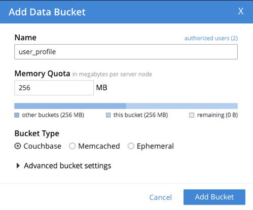
-
Click on "Add Bucket";
-
Go to "Query" and create the following primary index:
create primary index `primary_user_profile_index` on `user_profile` using GSI;-
Then, go to "Security" and click on "ADD USER"
-
Fill out the form with the following data:
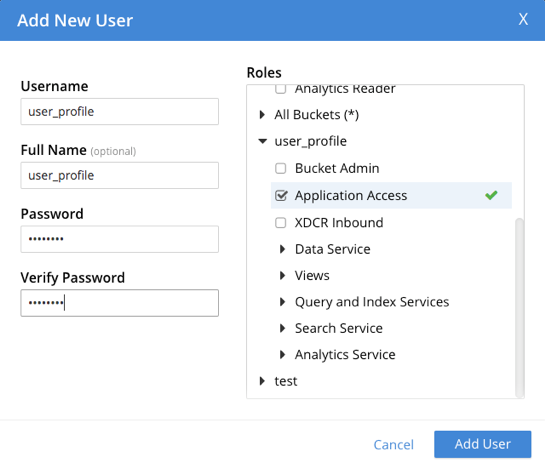
-
Username: user_profile
-
Full Name: user_profile
-
Password: password
-
Verify Password: password
-
Roles: under "user_profile", select "Application Access"
-
Finally, click on "Add User".
For more details on how to create a bucket and all of the advanced settings, check out the Create Bucket documentation.
How to Create a Simple User Profile Store
If you are using Visual Studio, use File→New to create a new project. I’m going to create an ASP.NET Core Web Application project. It will just be an API project, and I’ll be using .NET Core 2.2.
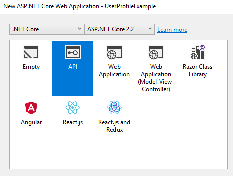
If you’d like to follow along, the full source code for this example project is available on GitHub.
Once you’ve created the application, let’s add a few packages to it with NuGet. First, add the Couchbase .NET SDK (dotnet add package CouchbaseNetClient if you’re using the command line). This package will give your application the ability to interact with the Couchbase cluster you created above. The next package is optional, but it will make some things easier: add the Couchbase.Extensions.DependencyInjection package (dotnet add package Couchbase.Extensions.DependencyInjection). This package will make it easy for the Couchbase SDK to be used throughout your .NET applications.
Then, let’s create a simple entity called User:
public class User
{
public string Id { get; set; }
public string CountryCode { get; set; }
public string UserName { get; set; }
public string Password { get; set; }
}With that class in mind, we can also create a very simple repository class. Right now, we only need two methods. One method to save a new User and one method to get a user by ID:
public class UserRepository
{
private readonly IBucket _bucket;
public UserRepository(IBucketProvider bucketProvider)
{
_bucket = bucketProvider.GetBucket("user_profile");
}
public User FindById(string id)
{
var result = _bucket.Get<User>(id);
var user = result.Value;
user.Id = id;
return user;
}
public void Save(User user)
{
_bucket.Upsert(user.Id, new
{
user.CountryCode,
user.Password,
user.UserName
});
}
}If you are following the repository pattern in your projects, this is a very simplified example of it. Some key things to point out:
-
Each Couchbase document has a key (also known as an ID) which is stored outside of the document itself. Therefore:
-
The
Savemethod is manually mapping the incomingUserobject in order to avoid storing a copy of the Id inside the document. This is also a safeguard in case theUserobject changes: you may not want to save every value. -
THe
FindByIdmethod is doing some extra work to popular theIdfield of theUserobject it is returning. -
To keep the tutorial simple, this code is all synchronous. Neither of these methods are doing any retrying or error handling. However, these are all concerns you should be aware of when working with any database, including Couchbase.
One part of the above repository that may not be clear is the constructor and the IBucket object. Remember back to the Couchbase.Extensions.DependencyInjection package. That’s what’s going to be responsible for supplying this class with an IBucketProvider instance. Let’s go over to Startup.cs, and add a line to the ConfigureServices method:
services.AddCouchbase(Configuration.GetSection("Couchbase"));This line is telling ASP.NET MVC Core two things:
-
Add Couchbase as a service to ASP.NET MVC Core
-
Where to look in the configuration file to create a Couchbase connection
And speaking of the configuration file, let’s add the Couchbase section to it now (based on how we configured it earlier):
{
"Logging": {
"LogLevel": {
"Default": "Debug"
}
},
"AllowedHosts": "*",
"Couchbase": {
"Servers": [ "http://localhost:8091" ],
"Username": "user_profile",
"Password": "password"
}
}At this point, any class instantiated through regular ASP.NET Core dependency injection will be able to get a ready-to-use IBucketProvider.
Now we’re able to actually create a very basic REST endpoint that will create a user, and then immediately retrieve it from the database. For example;
[HttpGet]
[Route("api/doSomething")]
public IActionResult DoSomething()
{
var user = new User();
user.Id = "user::" + Guid.NewGuid().ToString();
user.CountryCode = "DE";
user.Password = "letmein";
user.UserName = "Bilbo";
_userRepository.Save(user);
// read after write
var savedUser = _userRepository.FindById(user.Id);
return Ok(savedUser);
}When you call the above endpoint (e.g. http://localhost:5000/api/doSomething), a user will be created, saved to Couchbase, read immediately back out of Couchbase, and returned via HTTP.
The code above might look trivial for you, especially if you are coming from the relational world. But there is a lot going on under the hood:
-
Couchbase is automatically sharding the data, and this process is totally transparent for the developer.
-
You can read after write.
-
The document is automaticaly cached.
-
Operations like findById and save use internally the Key-Value Store Engine, which is, from a 10,000 foot view, a big distributed hash map. This kind of structure is fast for reads and writes and as Couchbase already has a totally transparent manage cache internally, you will get a very good performance without any extra effort.
Even though we haven’t written a lot of code yet, we already achieved 3 of our initial Non-functional requirements:
Querying the Database
Let’s first expand our example to something closer to the real world by adding a few extra attributes (like firstName, middleName, lastName and securityRoles) and also a few entities (like Preference and Address). Here is the respective code:
public class User
{
public User()
{
Type = "user";
}
public string Id { get; set; }
public string FirstName { get; set; }
public string MiddleName { get; set; }
public string LastName { get; set; }
public bool Enabled { get; set; }
public int TenantId { get; set; }
public string CountryCode { get; set; }
public string UserName { get; set; }
public string Password { get; set; }
public string SocialSecurityNumber { get; set; }
public List<Telephone> Telephones { get; set; }
public List<Preference> Preferences { get; set; }
public List<Address> Addresses { get; set; }
public List<string> SecurityRoles { get; set; }
public string Type { get; }
}Even though we added some new attributes, our code has barely changed:
-
No change is needed in our UserRepository.
-
Arrays and nested entities will be handled automatically by Couchbase.
-
No need to implement a Lazy/Eager behavior. There is no extra cost on bringing the whole document other than the size of the document itself.
Here is how our current structure will look like on the database:
{
"firstName": "Denis",
"lastName": "Rosa",
"enabled": true,
"tenantId" : 4,
"countryCode": "DE",
"username": "someUser",
"password": "letMeIn",
"securityRoles": ["USER", "ADMIN"],
"preferences": [
{
"name": "lang",
"value": "en"
},
{
"name": "currency",
"value": "EUR"
}
],
"addresses": [
{
"name": "Home",
"street": "Marienplatz",
"number": "1",
"zipCode": "80913",
"city": "Munich",
"state": "Bayern",
"countryCode": "DE"
}
],
"telephones": [
{
"name": "cell",
"number": "111-222-3333"
}
]
}Couchbase has no concept similar to tables in an RDBMS, all documents are analogous. Therefore, if you need to differentiate documents, you will need to add a property which will work as a document type. To do this, you could add a field like type.
Couchbase has a SQL-like language called N1QL which you can use to query the database. With .NET, you could also bring in Linq2Couchbase if you’d rather write your queries in Linq. Ultimately, those Linq queries get translated into N1QL. Here’s an example of a few repository methods we could add using either N1QL directly or Linq2Couchbase:
public List<User> ListTenantUsers(int tenantId, int offset, int limit)
{
var n1ql = $@"Select meta().id as id, username, tenantId, firstName, lastname
from `{_bucket.Name}`
where type = 'user'
and tenantId = $tenantId
order by firstName asc
limit $limit
offset $offset";
var query = QueryRequest.Create(n1ql);
query.AddNamedParameter("tenantId", tenantId);
query.AddNamedParameter("limit", limit);
query.AddNamedParameter("offset", offset);
var results = _bucket.Query<User>(query);
return results.Rows;
}
public List<User> FindActiveUsersByFirstName(string firstName, bool enabled, string countryCode, int limit, int offset) {
var results = _bucketContext.Query<User>()
.Where(u => u.Type == "user")
.Where(u => u.FirstName.ToLower() == firstName.ToLower())
.Where(u => u.Enabled == enabled)
.Where(u => u.CountryCode == countryCode)
.Select(u => new { key = N1QlFunctions.Meta(u).Id, document = u })
.Skip(offset)
.Take(limit)
.ToList();
results.ForEach(r => r.document.Id = r.key);
return results.Select(r => r.document).ToList();
}As you can see in the code above, you can query the database in two different ways: writing N1QL queries directly against the Couchbase .NET SDK, or by using Linq with Linq2Couchbase.
You can learn more about Linq2Couchbase on GitHub and more about the Couchbase .NET SDK in documentation.
One more important note about querying. When we were setting up the bucket earlier, we created a single index. That was a primary index. This index is fine for development or small sets of data. But as more users and other data is added to the bucket, this index will become slower and slower. The queries will basically have to scan every document in the bucket. For this reason, creating the right indexes is critical.
To avoid that, let’s create a couple of indexes to make the above two methods more performant. First, for the N1QL in the ListTenantUsers method:
CREATE INDEX ix_listTenantUsers ON `user_profile`(`tenantId`) WHERE `type` = 'user';This will create an index when looking up the tenantId for user documents.
For FindActiveUsersByFirstName it’s a little trickier, because the N1QL is generated, but if you enable logging the .NET SDK, the generated N1QL will be output at the DEBUG level. Here’s an index that will improve performance for this query:
CREATE INDEX ix_findActiveUsersByFirstName ON `user_profile`(`countryCode`,`enabled`,lower(`firstName`)) WHERE `type` = 'user';Creating the right indexes can be difficult. If you are having trouble creating the right index, here are two paths you can take to get help:
-
Starting in Couchbase Server 6.5, there is an index advisor that can automatically make index recommendations for you. To learn more about this, read the User Profile Indexing tutorial. This tutorial uses the same type of data that you’ve already been creating if you’ve been following along with this User Profile Tutorial.
-
Check out the N1QL category on the Couchbase Forums. You can post a question about N1QL queries or indexes, and the community there can often help you.
Now that you know how to query your user profile store, let’s revisit our list of non-functional requirements:
Searching Users with Full-Text Search
One of the important requirements in a User profile Store is to quickly search for a user or to quickly search through all the history of interactions with them. This feature could enable, for instance, a better post-sales experience in retail or a more accessible patient history in a health care system.
For many years developers have been using pure SQL to implement these types of functionalities. However, this type of technology has proven to be inefficient to deal with language nuances and limited in terms of performance.
Searching for people’s name, for instance, is a tricky scenario, where the same name might have dozens of variations. In this session, let’s try to solve this issue by enhancing our users listing using Couchbase Full-Text Search on it. The goal is to implement a simple search that is able to return users called Allex or Alec when we search for Alex.
The first step is to create a Full-Text Search index via Search → Add Index, with the following parameters:
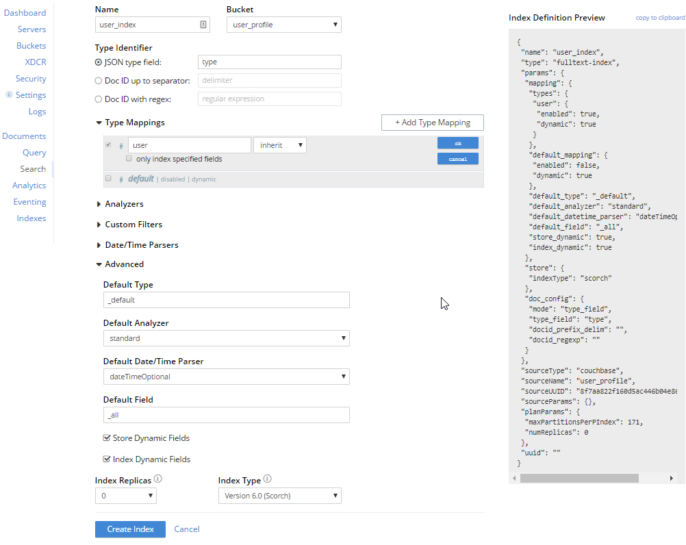
-
Name: the name of the index
-
Bucket: The target bucket where your documents are stored
-
JSON type field: As we are using a
typefield to organize documents, our object type is the attribute called type" -
Advanced → Store Dynamic Fields: Let’s also store our documents in the index.
-
Type Mappings: Uncheck the 'default' mapping, and add a new mapping for "user" (so this index will only search documents where type="user")
Click on your index, type "Alex" and hit Search to check if your index was created correctly:
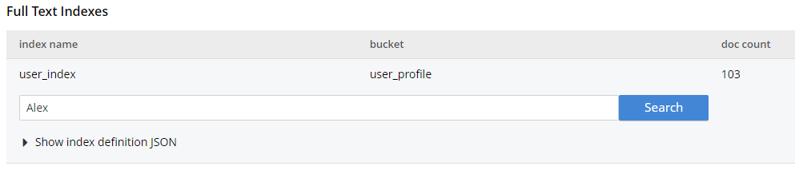
The results should be similar to the following:
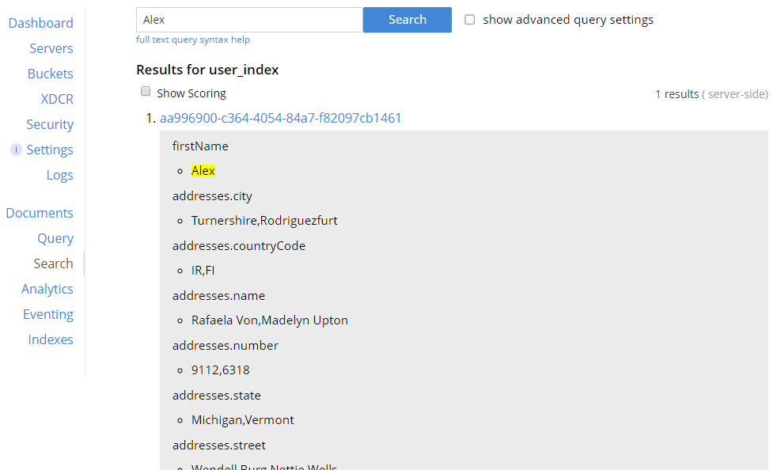
You can read more about how to index only specific fields here.
Now that we already have our index in place, let’s see how we can make the same US users query using Couchbase FTS Engine:
public List<User> FtsListActiveUsers(string firstName, bool enabled, string countryCode, int limit, int skip)
{
var firstNameFuzzy = new MatchQuery(firstName).Fuzziness(1).Field("firstName");
var firstNameSimple = new MatchQuery(firstName).Field("firstName");
var nameQuery = new DisjunctionQuery(firstNameSimple, firstNameFuzzy);
var isEnabled = new BooleanFieldQuery(enabled).Field("enabled");
var countryFilter = new MatchQuery(countryCode).Field("countryCode");
var conj = new ConjunctionQuery(nameQuery, isEnabled, countryFilter);
var searchQuery = new SearchQuery();
searchQuery.Fields("id", "tenantId", "firstName", "lastName", "userName");
searchQuery.Index = "user_index";
searchQuery.Query = conj;
searchQuery.Skip(skip);
searchQuery.Limit(limit);
var result = _bucket.Query(searchQuery);
var users = new List<User>();
if (result != null && !result.Errors.Any())
{
foreach (var hit in result.Hits)
{
var user = new User();
user.Id = hit.Id;
user.TenantId = int.Parse(hit.Fields["tenantId"].ToString());
user.FirstName = hit.Fields["firstName"];
user.LastName = hit.Fields["lastName"];
user.UserName = hit.Fields["userName"];
users.Add(user);
}
}
return users;
}In the code above, we start by creating a disjunction query using the user’s first name. The disjunction query is something similar to an "OR" operator in SQL.
var firstNameFuzzy = new MatchQuery(firstName).Fuzziness(1).Field("firstName");
var firstNameSimple = new MatchQuery(firstName).Field("firstName");
var nameQuery = new DisjunctionQuery(firstNameSimple, firstNameFuzzy);Note that firstNameSimple is an exact match of the target term, and firstNameFuzzy allows a match with a levenshtein distance of 1. As an exact match will score higher than a fuzzy match, a combination of those two will allow you bring the exact matches first.
Then, we filter by country and if the user is active:
var isEnabled = new BooleanFieldQuery(enabled).Field("enabled");
var countryFilter = new MatchQuery(countryCode).Field("countryCode");And join all filters using a conjunction query, something similar to an "AND" operator in SQL.
var conj = new ConjunctionQuery(nameQuery, isEnabled, countryFilter);Finally, we execute the query specifying which fields we want to be returned and parse the result:
var searchQuery = new SearchQuery();
searchQuery.Fields("id", "tenantId", "firstName", "lastName", "userName");
searchQuery.Index = "user_index";
searchQuery.Query = conj;
searchQuery.Skip(skip);
searchQuery.Limit(limit);
var result = _bucket.Query(searchQuery);
var users = new List<User>();
if (result != null && !result.Errors.Any())
{
foreach (var hit in result.Hits)
{
var user = new User();
user.Id = hit.Id;
user.TenantId = int.Parse(hit.Fields["tenantId"].ToString());
user.FirstName = hit.Fields["firstName"];
user.LastName = hit.Fields["lastName"];
user.UserName = hit.Fields["userName"];
users.Add(user);
}
}
return users;For instance, a search for the term Alex would return a result similar to the following:
[
{
"id": "b4e96470-9667-49d6-9689-b837c58deab9",
"firstName": "Alex",
"lastName": "Mueller",
"enabled": false,
"tenantId": 1,
"userName": "alex.mueller",
"type": "user"
},
{
"id": "e2d406d7-e411-42da-af3d-32d2c32d2b91",
"firstName": "Allex",
"lastName": "Kirlin",
"enabled": false,
"tenantId": 4,
"userName": "allex_kirlin",
"type": "user"
},
{
"id": "2439115f-560c-4860-b53a-dc988e807e04",
"firstName": "Alec",
"lastName": "Nienow",
"enabled": false,
"tenantId": 3,
"userName": "alex.nienow",
"type": "user"
}
]The users will be automatically sorted by their score, but you can still sort the results by a specific field if needed.
Couchbase Full-Text Search should be the primary choice whenever you need to search for complex strings or any type of fuzzy matching. You can read more about it in the documentation’s 'full text intro'.
Lastly, let’s add a new item to our list of non-functional requirements:
Storing User Events
So far, in our User Profile Store, we discussed about how to store basic data about our users without targeting any specific scenario. Just as a quick exercise, let’s imagine what else we could store in our application according to each use case:
Finance
-
User’s transactions history
Even though the requirements of a User Profile Store might be very specific for each vertical, they all can benefit from a common use case: storing user events.
Events are essential to understand how the user behaves and might feed several AI/Analytics systems to build predictions or recommendations. However, it will usually demand a high write/read throughput architecture.
Up until now, all of the code has been synchronous. We can achieve better throughput by using an asynchronous approach. Fortunately, C# has async/await built right in, and the Couchbase .NET SDK also has asynchronous support. If you aren’t familiar with asynchronous programming in C#, I recommend you check out Microsoft’s documentation first.
In our small use case, we will only need two methods:
-
AddEventsAsync: Store new events asynchronously.
-
FindLatestUserEventsAsync: Return the latest N events by type.
public async Task AddEventsAsync(List<UserEvent> events)
{
var tasks = events.Select(e => _bucket.InsertAsync(e.Id, new
{
e.CreatedDate,
e.EventType,
e.UserId,
e.Type
}));
await Task.WhenAll(tasks);
}This method can take one or more events as input (being able to take a collection of events is useful if you’re doing any kind of batching). The use of _bucket.InsertAsync should look fairly familiar, as it’s very similar to _bucket.Insert that was used earlier in this tutorial. But there are two things to note:
-
It is an
asyncmethod. This means it returns aTask. -
Since we are handling a collection, I’m gathering up all the
Task`s using a `Selectand thenawait`ing all of them with a `Task.WhenAll.
In the sample code (available on GitHub), I use AddEventsSync primarily to populate sample data. However, for FindLatestUserEventsAsync, I created an HTTP endpoint:
[HttpGet]
[Route("api/findLatestUserEvents")]
public async Task<IActionResult> FindLatestUserEvents(string userId, EventType? eventType, int limit = 50, int offset = 0)
{
if(string.IsNullOrEmpty(userId))
return BadRequest("userId is required");
if(!eventType.HasValue)
return BadRequest("eventType is required");
var result = await _userRepository.FindLatestUserEvents(userId, eventType.Value, limit, offset);
return Ok(result);
}Note that endpoint is also async and also returns a Task. From the very start, as the HTTP request comes in, the entire process is asynchronous. The FindLatestUserEventsAsync method is using N1QL directly:
public async Task<List<UserEvent>> FindLatestUserEvents(string userId, EventType eventType, int limit, int offset)
{
var n1ql = $@"SELECT META(e).id, e.userId, e.createdDate, e.eventType
FROM `{_bucket.Name}` e
WHERE e.type = 'userEvent'
AND e.eventType = $eventType
AND e.userId = $userId
LIMIT $limit
OFFSET $offset";
var query = QueryRequest.Create(n1ql);
query.AddNamedParameter("eventType", eventType);
query.AddNamedParameter("userId", userId);
query.AddNamedParameter("limit", limit);
query.AddNamedParameter("offset", offset);
var result = await _bucket.QueryAsync<UserEvent>(query);
return result.Rows;
}Again, note that the method is async and returns a Task. Unlike the previous example of using N1QL, this method is using _bucket.QueryAsync.
With the asynchronous architecture we have explained in this session, your application won’t need to wait for a response from the database. This approach can improve significantly your read/write throughput at scale.
How to configure Cross Data Center Replication (XDCR)
Cross Data Center Replication is one of the most appealing features in Couchbase, with it you can easily distribute and replicate your data globally using a secure and reliable protocols that can be paused and resumed at any time.

XDCR supports replication between clusters of different sizes, and it is configured on the bucket level (between buckets of two or more clusters). You can also configure the direction of the replication.
In our User Profile Store example, we will have 2 datacenters: one in the US and the other in Europe. Therefore, if a user living in the USA travels to Europe, he will connect to our European Datacenter.
The user should be able to log in and access his profile, but we won’t leverage his previous events/recommendations, as EU is a different market with different products, regulations, taxes, currencies, etc.
In practice, we will need to replicate only the User to achieve this behavior. the rest of entities will be local to each cluster. To simulate this scenario, we will use two Couchbase instances, one running local and the second on docker, here is how to set up them:
-
Let’s start by setting up a second Couchbase instance. Feel free to choose where you want to run it, but the two machines should be able to talk to each other.
-
Once you have created your new instance, go to Buckets→ ADD BUCKET, and then create a new bucket called user_profile
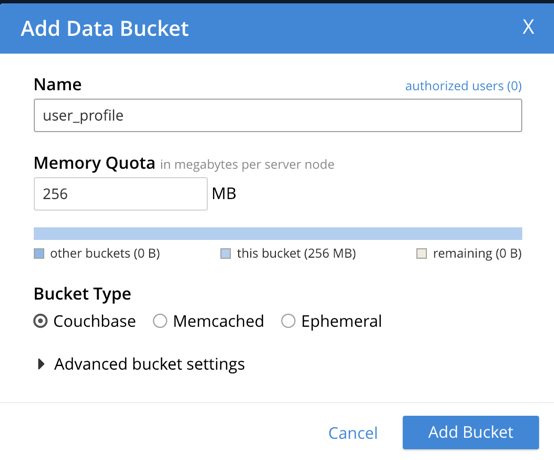
-
Now let’s connect our EU cluster with our US one. Click on XDCR→ Add Remote Cluster:

-
Cluster Name: Name of the cluster you are connecting to
-
IP/Hostname: IP address of one of the nodes of the remote cluster
-
Username/Password: username and password of the remote cluster
-
Click on XDCR → Add Replication, and fill out the form like the following:
-
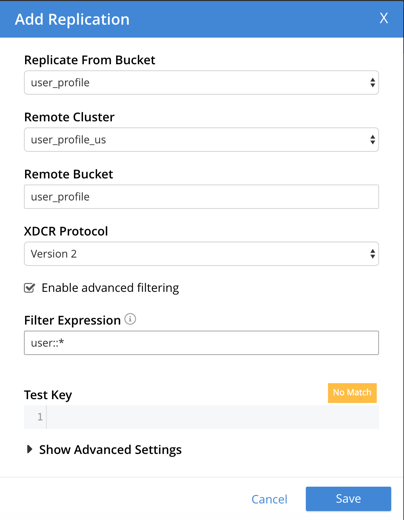
Note that we have checked the option Enable advanced filtering. It will allow you to filter which documents should be replicated by applying a regex on the document id. In the case above, only documents with ids starting with "user::" will be replicated. As in our User Profile store, only the User has this prefix, it will be the only document type which will be replicated to other clusters. You can read more about it here.
The final result should be similar to the following:
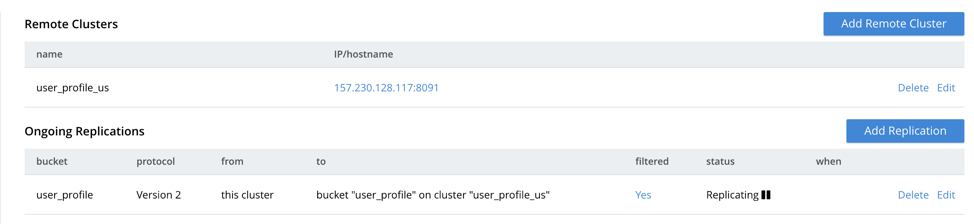
The replication will start automatically and in a few seconds you will be able to see documents appearing in the EU Cluster:

As we are filtering which documents should be replicated between clusters, the total number of documents will be different in both clusters:

Configuring Bidirectional Replication
In our current scenario, EU users also should be replicated to US. It will require us to do nearly the same configuration in our US cluster, but this time pointing the replication to the EU Cluster.
As you might already guess, we need to first register our EU Cluster in our US Cluster:

Finally, we can add the replication from EU to US:
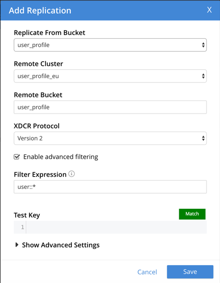
Here is how your replication should look like:
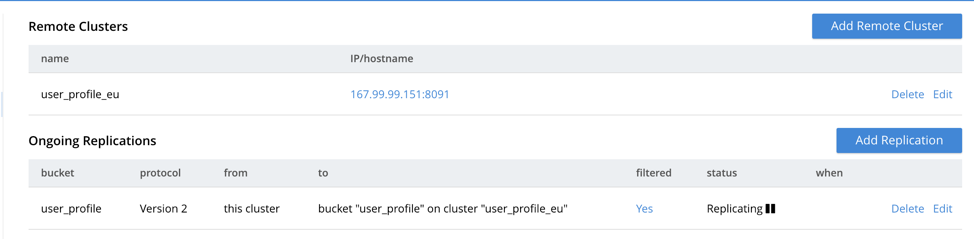
Disaster Recovery with XDCR
XDCR is also commonly used in disaster recovery plans (DRP). In this scenario, all you need to do is to set up a new Couchbase cluster in your DRP environment, then create a replication from your maib cluster to your DRP. On the top of it, you could still use the multi-cluster aware (MCA) SDK which can automatically redirect traffic to a different cluster according to a set of rules.
With XDCR, the MCA SDK and all Couchbase internal features, like replication and AutoFailover, we can update our list of non-functional requirements: